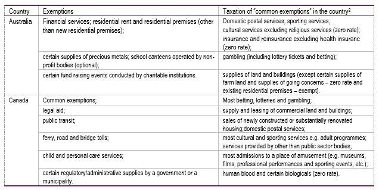
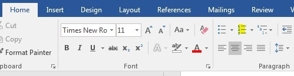

6. Inserting boxes, tables, figures and infographics
This chapter will help you manage the boxes, tables, graphs and infographics.
6.1. Boxes
All recommendations or information on this section are valid for boxes including Key Box and In Brief boxes. You should use the add-in to insert them. For more information consult _ESSENTIALS: Inserting elements (e.g. tables, figures and boxes)
6.1.1. Technical information
If you wish to customise or change the numbering, we do not recommend to make the change directly in the automatic numbering. You should instead remove and write the numbering you want on each figure. In this case, they will not appear in the Table of contents.
If a box covers more than one page, the title should not be repeated.
Insert an empty paragraph in Para style between two boxes (e.g between a box and a table; or between a box and the references).
Notes should not appear in any titles or sources.
Do not include Title, Notes and Sources alone on a page and the rest of the box on another page.
All notes should be numbered and should be in superscript (no alpha or asterisk, no endnotes).
The notes are to be included at the end of the boxes following the example below (note the correct order).
Box 6.1. Antibiotic resistance: Acquisition and techniques
Bacteria can acquire antibiotic resistance through either spontaneous gene mutations or acquisition of resistance genes from other bacteria. Mobile genetic elements shared between bacteria are capable of transmitting powerful multi-drug resistance genes such as extended spectrum beta-lactamases (ESBLs) or carbapenemases.1
Note: Oral antibiotics, taken for one type of infection for example will affect all bacteria in the gut stimulating gene transfer and promoting resistance.
← 1. For example, some bacteria may alter the proteins that penicillin target rendering this antibiotic ineffective.
Source: Adapted from OECD.
Examples of elements that can be inserted in a box. Styles to be applied are represented in orange.
Box 6.2. Example (including all possible features) Caption
Box Heading
To make your document look professionally produced, Word provides header, footer, cover page, and text box designs that complement each other. For example, you can add a matching cover page, header, and sidebar. To make your document look professionally produced, Word provides header, footer, cover page, and text box designs that complement each other. For example, you can add a matching cover page, header, and sidebar. Para
Box Heading 2
To make your document look professionally produced, Word provides header, footer, cover page, and text box designs that complement each other. Para
To make your document look professionally produced, Word provides header, footer, cover page, and text box designs that complement each other. For example, you can add a matching cover page, header, and sidebar. Style Quotation (short).
Bullet Style Bulleted List
Bullet Style Bulleted List
Bullet
Bullet
Bullet
3Number Style Numbered List
a.Number Style Numbered List (same process Bulleted List)
i.Number
a)Number
1)Number
To make your document look professionally produced, Word provides header, footer, cover page, and text box designs that complement each other. For example, you can add a matching cover page, header, and sidebar. Style Quotation (long).
Figure 6.1. The change in distribution Style Caption
The figure must be in "Figure" style
Note: This is my figure note Style Source & notes
Sources: Style Source & notes
StatLink 2 https://stat.link/moe8rg
Table 6.1. Private finance mobilised in LDCs and other developing countries Style Caption | |||
|---|---|---|---|
Year | Private finance mobilised in LDCs, USD billions | Total private finance mobilised in all developing countries, USD billions | Private finance mobilised in LDCs as % of total |
20121 | USD 0.752 | USD 15.274 | 4.9% |
2013 | USD 1.448 | USD 19.363 | 7.5% |
2014 | USD 1.677 | USD 22.653 | 7.4% |
2015 | USD 1.911 | USD 27.674 | 6.9% |
2016 | USD 1.803 | USD 34.272 | 5.3% |
2017 | USD 1.676 | USD 34.685 | 4.8% |
Note: This is my table note Style Source & notes | |||
← 1. This is my note in superscript in the table. Style Source & notes | |||
Source: Style Source & notes | |||
StatLink 2 https://stat.link/qfiwlh | |||
Infographic 6.1. Though financial pressures may influence their plans
Note: General note of the box. Source & notes
1. Note in the text in superscript. Source & notes
Source: UNESCO (2018). Source & notes
Tip
For more information: Best practices on boxes: see page 20 of the OECD Style Guide
6.1.2. How to insert a table into a box
Use the O.N.E Author Add-in to insert a table in a box.
Tables inserted into a box should be reduced to 16 cm. First, reduce the table and second the box. (When tables are created and inserted into a box, make sure that their size is 16 cm. If you bring an external table to a box, please reduce its size to 16 cm and adjust after the size of the box.)
6.1.3. How to adjust the box size
The maximum box width is 16.4 cm.
Put the cursor into the box (tab Table Tools/Layout/Cell Size).
6.1.4. How to insert a figure into a box
For figures created with OECD.Graph
If you are using PowerPoint, Illustrator or Excel, the background should be white with grey lines or a different color from the background of the box.
6.1.5. How to display a box on several pages
Do not break a box with a Page Break. Otherwise, you create another box. Place your cursor where you want to break the box and hit Enter to push the text to the next page. You should not break a paragraph.
6.1.6. How to manage the layout with a box
1Place the cursor on the box title
2Tab Home/Paragraph/Line and Page Breaks/untick Keep with next.
6.2. Same rules for tables and figures
If you wish to customise or change the numbering, we do not recommend to make the change directly in the automatic numbering. You should instead remove and write the numbering you want on each figure. In this case, they will not appear in the Table of contents.
A table should not be named figure and vice versa.
Do not include any note (superscript) in a Table title or Figure title.
Title, Notes, Sources or StatLinks should not appear alone on a page.
The general rule is 1 StatLink for 1 Table. A table should be composed of:
1 title + (1 subtitle) + 1 table (one page or more) + notes + source + StatLink.
HYPERLINK:
StatLinks - how to
Please also consult: About the "Create publication package" feature
To insert it stat+F3 (https://stat.link/) or tab Insert/Quick Parts/Auto text/choose StatLink [09) StatLink].
StatLinks - how to
To insert it doi+F3 (https://doi.org/10.1787/) or tab Insert/Quick Parts/Auto text/choose DOI [09) StatLink].
Size: For correct insertion in your Word file, the maximum width for a graph or a table should be 16.4 cm. Please note that the same width should be 16 cm if you are inserting it inside a box. Do not insert a figure more the size 16.4 cm, the Figure is lost in the digital outputs.
Fonts to use: OpenType fonts, Arial, Arial Narrow, Symbol, ITC Zapf Dingbats Std.
6.3. Tables
All recommendations or information in this section are valid for tables. You should use the add-in to insert them. For more information see _ESSENTIALS: Inserting elements (e.g. tables, figures and boxes)
6.3.1. General information
The title should be repeated when Table spreads over more than one page. Select the Table column rows. Go tab to Table Tools/Layout/Repeat Header Rows.
Text tables do not include StatLinks.
The notes within tables must be inserted manually as numbers in superscript. To do so, you must click on tab Home/. Avoid using the superscript key tab, otherwise no link will be included in the Webbook.
Do not insert page breaks in tables.
6.3.2. Technical information
Use the O.N.E Author add-in/Insert Elements.
The styles to be applied are indicated in orange, see example.
Table 6.2. Private finance mobilised in LDCs and other developing countries (Style Caption) Never note in Title. | |||
|---|---|---|---|
Year Style Table Column | Private finance mobilised in LDCs, USD billions Style Table Column | Total private finance mobilised in all developing countries, USD billions Style Table Column | Private finance mobilised in LDCs as % of total Style Table Column |
2012 Style Table Row | Style Table Cell USD 0.7521 | Style Table Cell USD 15.274 | Style Table Cell 4.9% |
2013 Style Table Row | USD 1.448 | USD 19.363 | 7.5% |
2014 Style Table Row | USD 1.677 | USD 22.653 | 7.4% |
2015 Style Table Row | USD 1.911 | USD 27.674 | 6.9% |
2016 Style Table Row | USD 1.803 | USD 34.272 | 5.3% |
2017 Style Table Row | Style Table Cell USD 1.676 | Style Table Cell USD 34.685 | Style Table Cell 4.8% |
Note: This is my general note in style Source & notes. | |||
← 1. This is my note in superscript in style Source & notes. | |||
Source: Style Source & notes. | |||
StatLink 2 https://stat.link/3ebmp4 | |||
6.3.3. Styles to be applied to tables (If you are not using the Add-in)
Possibility to reconfigure a table in OECD format.
1If you recover tables not formatted in O.N.E Author like the example below.
You can apply the predefined O.N.E Author table.
1Place the cursor on the table
2In the Table Tools tab
3Click on Design
4Choose the OECD model
5Add the appropriate styles O.N.E Author on the table.
6.3.4. Recommendation
Ensure the number and width of columns remains consistent throughout the table.
Do not add empty columns or rows.
Incorrect: Table including an irregular number of columns. Delete empty columns and rows
Correct

6.3.5. How to align cells
To align a text with many cells, it is recommended to add rows and not empty paragraphs.
You should create multiple rows and merge the cells if necessary.
Incorrect: several paragraphs in cells have been inserted to get the requested alignment
Correct: One paragraph per cell to have an alignment

6.3.6. How to format numbers and text within a table cell
The columns with the text are aligned to the left or centre.
The columns with digits are aligned to the right or centre. The header row is centre.
Table 6.3. Table model | ||
|---|---|---|
Strain-characteristics | Setting | |
Health care | Community | |
Acinetobacter spp excluding those with resistance to carbapenem and/or fluoroquinolones and/or colistin | X | |
Acinetobacter spp with resistance to carbapenem | X | |
Acinetobacter spp with resistance to fluoroquinolones | X | |
Acinetobacter spp with resistance to colistin | X | |
6.3.7. How to insert notes in tables
Do not include notes in a table title or in the sources. Follow the next steps to order the notes under a table.
1Type the word Note(s) for a general note.
2Numerical note 1, 2, 3, etc.
3The asterisk (*) for special cases.
Correct: Note order starting with Notes, then 1, etc.
Correct: Asterisk should be included as per the example below
Table 5.3. Formal-Informal income per hour worked gap estimation, Hidalgo, 2017 | |
|---|---|
Variable | Estimate |
Completed secondary education | 0.304** (0.0529) |
Female | -0.114* (0.0285) |
Notes: Robust standard errors in parentheses. | |
Dependent variable is income per hour worked in natural logarithms. | |
* p < 0.1. | |
** p < 0.01. | |
Source: ENOE, III-Trimester 2017. | |
6.3.8. How to create a table with multiple panels, and table headers on multiple pages
1Model with multiple Panel titles
You should apply the Table Column style to the other header rows (see information in orange).
2Model with multiple headers and pages
If your table is on two pages, you should repeat the header rows. Select the rows and go to Table Tools/Layout/Repeat Header Rows. There is no need to repeat the title and subtitle.
Table should not be broken up by a Page Break. Otherwise, you create another table. Instead hit Enter to push the text to the next page.
6.3.9. How to insert an indent in a cell
You should add an indent in the paragraph (that is an indent left to 0.3 cm, 0.6 cm, 0.9 cm) by using the Home/Paragraph menu or Layout/Indent.
Incorrect
You should not add multiple spaces or add empty columns to create an indent or centre the digits in a column otherwise this will be lost in the Webbook.
Correct: Indents correctly created with the Home/Paragraph menu or Layout/Indent
6.3.10. How to create a list in a table
To create a list in a table, you have two alternatives available in the Home menu:
Bulleted: Apply the Table Cell style and tab Home/choose list Bullets.

Numbers: Apply the Table Cell style and tab Home/choose list Numbering (ou number?).

If you wish to insert another symbol by using a different character, use the symbol icon located in the Home tab. You must apply the Para style and choose the character (tab Insert/Symbol) and apply OpenType fonts to that symbol (see section 2.8 Managing special characters).
6.3.11. How to create a table with shadings
Create your table and apply colours in cells (tab Table Tools/Design/Shading). Do not apply the colour R237 G240 B247 in the cells. It will be deleted in the Web outputs.
Table 6.4. Factors driving aggregate cost of moving to a “safe haven”, by country | |||||
|---|---|---|---|---|---|
| Share of employment currently in jobs at high risk of automation | Indirect cost component (wages as a share of GDP) | Direct cost component (training cost as a share of GDP) | Training duration component | Total cost as a share of GDP |
Australia | |||||
Austria | |||||
Belgium | |||||
Canada | |||||
Chile | |||||
Czech Republic | |||||
Denmark | |||||
Estonia | |||||
Finland | |||||
France | |||||
Germany | |||||
Greece | |||||
Ireland | |||||
Note: For example, the total cost for Australia is low (in the first quartile of the cost distribution). Australia has a low share of employment in occupation at high risk of automation and low direct and indirect cost of training while it belongs to a cluster with large distances across occupations. | |||||
First quartile (hight performance) | |||||
Second quartile | |||||
Third quartile | |||||
Fourth quartile (low performance) | |||||
Sources: OECD calculations based on OECD (2012[1]) and OECD (2015[2]), Survey of Adult Skills (PIAAC), www.oecd.org/skills/piaac/publicdataandanalysis | |||||
Warning: Do not use patterns in a table.
How to create the colour rectangles for the legend
For the legend in notes, you should create a rectangle (0.25 × 0.5 cm) with Shapes (Insert/Shapes, tab Drawing Tools/Format/inform Height/Width and apply the same colour than the cells Shape Fill).
Copy the square, insert it in note (tab Home/Paste/Paste Special/choose Picture Enhanced Metafile) and apply the Source & notes style.
For rectangle with symbol + or – use Shapes Text Box
1 Make a rectangular Text Box of 0.25 cm by 0.5.cm.
2Text is Arial Narrow/7/Bold
3Place the text in the box: Format/Shapes styles/Text Options click on Layout & Properties.
4To put the box margins to 0 and center the text.
5Copy the Box, insert it in note (tab Home/Paste/Paste Special/choose Picture Enhanced Metafile) and apply the Source & notes style.
Don't forget to delete the shapes that served as a model.
6.3.12. How to insert a table as a picture
It is not recommended to insert a table as a picture except if the table is too big, or if the table includes a graph.
Tables should not be named Figures or vice versa.
1 Insert from the add-in an empty table to have the numbering.
2 Delete the empty table
3 Insert the EMF file of the table and apply Figure style.
Table 6.5. Table with a graph |
|---|
Note: |
Source: |
6.3.13. Statistical tables (PubStat)
Statistical tables can be bulk produced using DotStat datasets and an in-house publishing process called PubStat. Typical use cases include tables for statistical annexes or country profiles. PubStat outputs (DOCX, XLSX, HTML and PDF) are built to specifications for use in OECD publications and dissemination on OECD iLibrary to amplify the dissemination of statistical content. The main steps are:
Contact the PAC Statistical Editors
Once finalised, PAC provides you with the PubStat tables in a DOCX format, ready-formatted for O.N.E Author. All styles and colours are predefined for immediate use in manuscripts.
The DOCX tables are copied directly into the manuscript, including all the elements: title, sub-title, notes, source and the StatLink placeholder.
Any modifications to the table’s content should be requested via the Statistical Editors to regenerate the tables for both the DOCX output and other formats used for dissemination (XLSX, HTML, PDF). This ensures that all the file types have the same content.
Copy & paste all of the shaded area of your PubStat DOCX tables into your manuscript:
6.4. Figures
All recommendations or information in this document are valid for figures and infographics. You should use the add-in to insert them, please consult:
Remember
Warning: Do not insert figure in Excel format in the O.N.E Author document.
You can insert many types of illustrations in the publication, such as charts, illustrations, maps, etc.
For any non-OECD material inserted, it is important to first consult the Rules on copyrights, co-editions and working with external partners
6.4.1. General information
If a figure spreads over more than one page, the title should not be repeated.
StatLinks are not used in organigram charts.
Notes and sources are placed under the figure.
You should not insert page breaks within figures or when converting in XML two elements will be created instead of one.
Do not insert a figure that exceeds the max width size of 16.4 cm, the graphic is lost in the digital outputs.
The font size for the figures is 7.5 pt (same as OECD.Graph).
Create folder captions for all files (Excel, .emf, .eps, .png, .txt, .jpg). The figures should be named: g1‑1, g1-2 (see the naming convention
A figure should not be cropped in Word to hide text otherwise the cropping will be lost in the Webbook (see the below).
Warning
Do not crop images in Word. The Hidden parts reappear when generating digital outputs.
Graphic file

Graphic placed and cropped in Word
Result on the Webbook or (Epub)
6.4.2. Technical information
Use the add-in to insert figure.
The styles to be applied are indicated in Orange.
Figure 2. Style Caption
Style Caption Subtitle
The figure is in style Figure
Note: Style Source & notes
Source: Style Source & notes
6.4.3. Which image format should I use with O.N.E Author?
Figures produced with OECD.Graph
The images inserted in ONE.Author are files .emf (vector format) or .jpg. (pixels format). Vector format is PAC’s recommended format.
What is a vector format?
Vector images are representations of geometric shapes such as a circle, a rectangle or a segment.
The image can be enlarged or reduced to infinity without loss of quality.
A vector image is lighter than a matrix image (digital image made up of a multitude of colored points).
A vector image is ideal for simple graphical representations (geometric figures, lines, points).
What is a pixel format?
The pixel image as a multitude of points (pixels) of multiple colours.
This image format is reserved for photos.
A pixel image does not support resizing or enlarging operations. Both operations result in a loss of information.
Pixel file is heavier than the vector format.
You can see the number of pixels in an image by right clicking on the image file, select “properties”, go to “details” tab and scroll down to “resolution”.
Tip
Do not enlarge an image in .jpg or .png format, the quality will be deteriorated. Keep the image size 100% or less.
To control the image size:
1Select the image inserted in the O.N.E Author.
2Go to the tab Pictures Tools/Format/Size.
3In Scale put the desired value (100% or -100%) in Height and Width.
4Don't forget to check Lock aspect ratio/Relative to original image size.
JPEG is a common format for the web for photos or illustration drawings. If you have to insert a JPEG in the template, please consider the quality recommendations for a good image
It is recommended for high quality print to have 220 dpi to 300 dpi (i.e. on the cover page or to print a photo with a high level of detail).
Images copied from the web or screenshots should be avoided as they are generally only 72 dpi to 96 dpi.
A heavy document weight can be problematic for end users retrieving the content online.
6.4.4. Producing graphs with OECD.Graph
OECD.Graph (Excel)
Graphs are created with OECD.Graph to produce the following files .emf, .eps, .png, .txt:
1Install Ghostscript - GhostView via Software Center.
2Consult OECD.Graph for publications
3Consult the information to install OECD.Graph Quick Start Guide
To generate the caption files:
1Each graph must be selected in OECD.Graph without title, subtitle, notes and sources;
2Define the Print Area (tab Page Layout/Print Area/Set Print Area).
3Save the files of the graph in folder captions (tab OECD.Graph/Output/Save as EPS/PNG/EMF).
To insert a graph in a box, check Box in OECD.Graph. The background will be automatically set up to white, the strokes to grey, and the width will be reduced.
Tip
Transparency, 3D graph, shadow, glow and soft edges are not recommended to create a figure because they can create discrepancies for future file conversions (RGB to CMJN). You may apply a lighter colour but not a transparency. For readability purposes, it is also not recommended to use patterns.
For more information: Colour management and accessibilities for figures and illustrations
Graphs with Excel
Excel does not save a file in .EMF format. To do so, you may use the add-in of OECD.Graph to generate multiple formats.
To generate the caption files:
1Each graph must be selected in OECD.Graph without title, subtitle, notes and sources;
2Define the Print Area (tab Page Layout/Print Area/Set Print Area).
3Save the files of the graph in folder captions (tab OECD.Graph/Output/Save as EPS/PNG/EMF).
PowerPoint
PowerPoint allows you to generate.emf files (File/Save as/Enhanced Windows Metafile *.emf).
Word
Graph, organigram or table should not be inserted with shapes into O.N.E Author document. They should be created in a separated Word document.
Select the graph you created in the separate Word document and click right to copy. Insert the graph into the O.N.E Author document, tab Home/Paste Special/choose Picture (Enhanced Metafile). The file will be inserted is an EMF file.
6.4.5. Compatible colour palette
OECD.Graph color palette is compatible with O.N.E Author. In order to keep consistency and harmonised colours, it’s recommended you use the full colour palette.
To have a grey/white/black colour, the RGB values should be identical. For example: Black R0 G0 B0, Grey R146 G146 B146 and White R255 G255 B255.
6.4.6. Setting to adjust the resolution of images in Word
When inserting images (JPG or PNG) in O.N.E Author, they will automatically be in low definition. You should set the resolution of images to 330 DPI when importing them into Word (tab File/Options/Advanced). This setting must be applied each time you insert an image into your separate O.N.E Author files.
6.4.7. Managing figures with multiple panels
Panel title and other related texts should be inserted in the picture. Only the main title, subtitle, notes, sources and StatLinks are outside the picture (see Managing Figures with multiple panels
Warning
Don’t create table cell to add multiple figures!
6.5. Infographic
The infographic placed before or after the Executive summary will be a component on OECD iLibrary.
lt can be in full page, half page or three quarter of page.
The quality criteria are as follows:
To be inserted as an EMF (no shading, no transparency, no gradient, no pattern).
To be inserted as a JPG (minimum 300 dpi).
The maximum size is 164 × 210 mm.
Do not insert the title in the infographic.
Use the add-in to insert it and untick Include chapter number.
Tips
If the infographics of the publication are done with Illustrator, please provide PAC with the .emf, .svg and .eps files for the digital version, see Exporting graphs from Illustrator